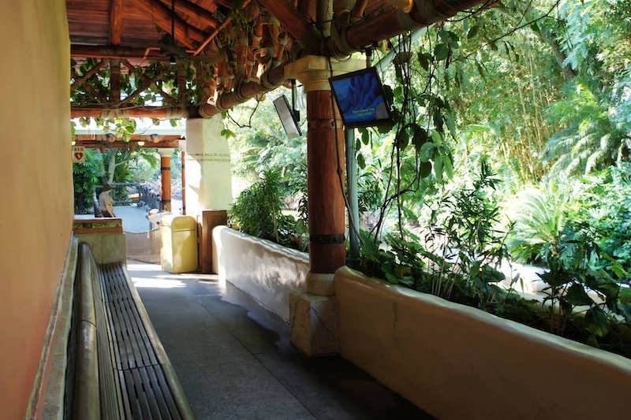
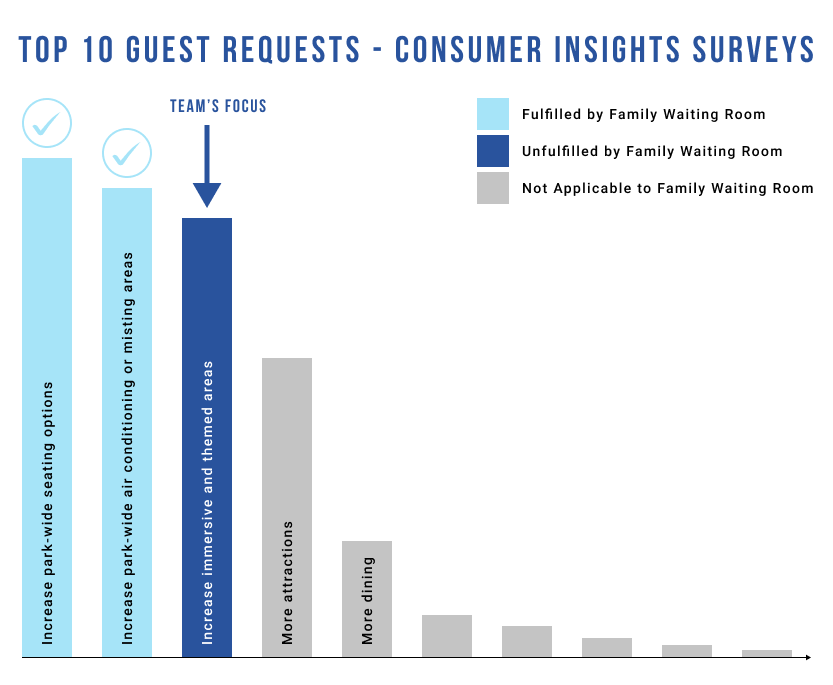
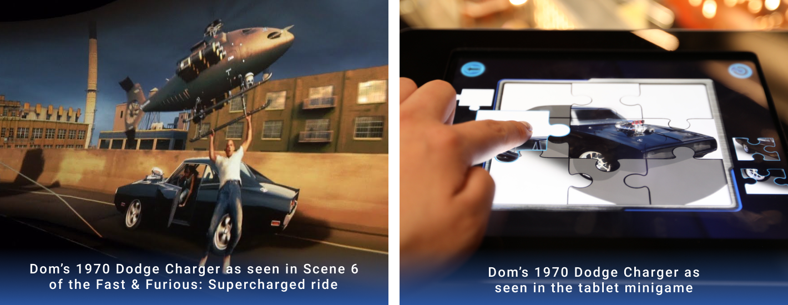
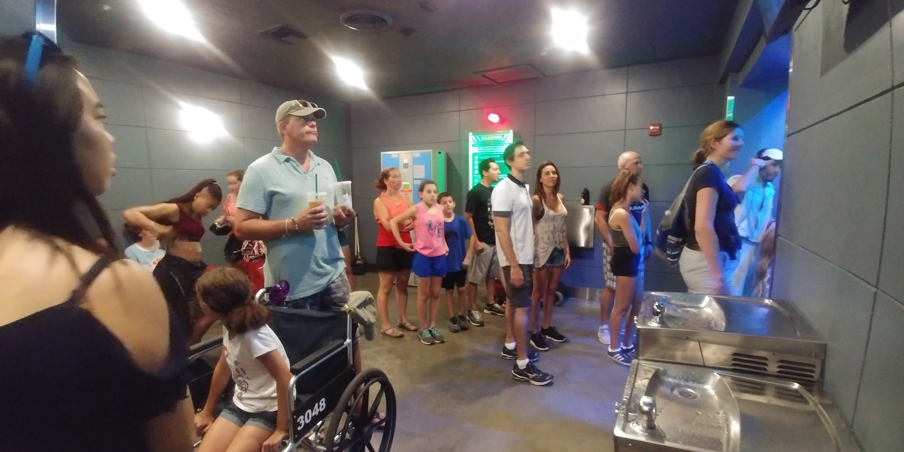
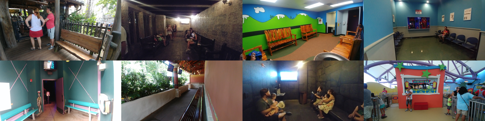
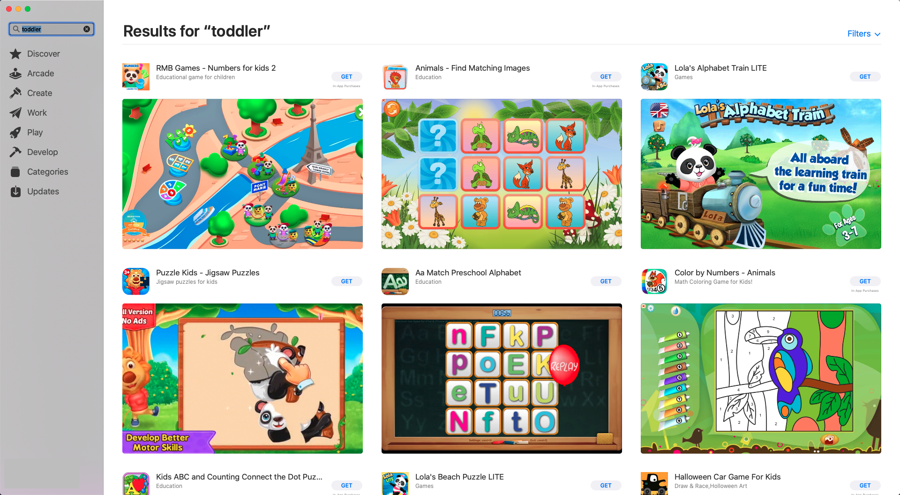
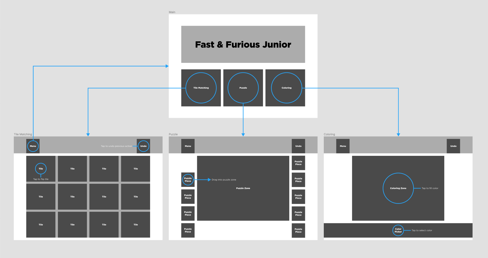
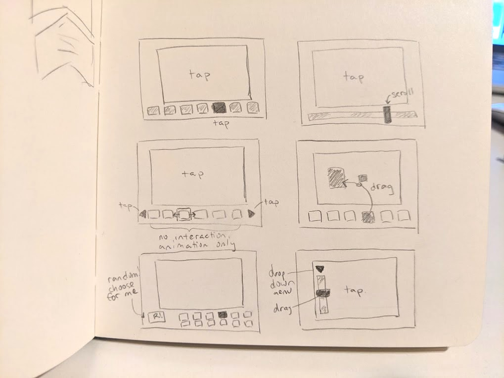
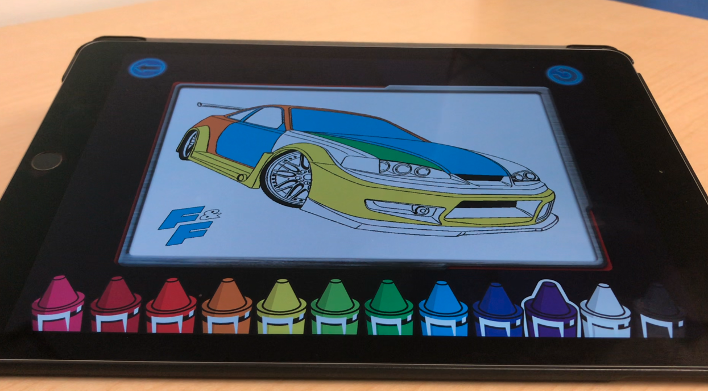

Fast & Furious Minigames
I led the user experience design of a tablet minigames experience created and implemented in the Fast & Furious: Supercharged attraction's Family Room at the Universal Studios Florida theme park.


overview
Challenge
If you do not ride an attraction, you miss out on a lot. How can we make a ride's Family Room more inclusive, fun, and immersive so guests who cannot or do not ride can also enjoy the attraction?
Solution
Create a space targeted specifically for Family Room users through implementing themed physical and digital game options usable by a large demographic.
Impact
We created the first Family Room of its kind with built-in games! Family Room users can experience a unique aspect of the attraction to share with the rest of their theme park group without having ridden the ride. The design team inspired other Ride Designers to increase their consideration of the Family Room for future attractions to be more inclusive for all guests.
TEAM
Myself - UX Designer
Humberto Kam - Lead Producer
Anthony Melo - Software Developer
Logan Bender - 2D Artist
LOCATION
Orlando, FL
TIMELINE
Feb 2017 - Apr 2017 (3 Months), Apr 2018 (Implementation+Launch)
To comply with my non-disclosure agreement, I have changed some of the data and omitted some information in this case study. All information in this case study is my own and does not necessarily reflect the views of Universal Parks & Resorts.
Context
What Is A Family Room?
An attraction's Family Room is a waiting room for guests with small children, or anyone who cannot/does not want to ride, where one member of your party can wait with the little ones while the rest of your party rides. Once the main party finished riding, they may switch places so whoever rode can stay with the kids, and the adult(s) who sat out can then enjoy the ride.
Transformers: The Ride 3D Family Room.

Men In Black: Alien Attack Family Room.
Escape from Gringotts Family Room.
Jurassic Park River Adventure Family Room.
Besides seating and movie clips on loop, Family Rooms (also known as Child Swap Rooms) do not have much else to offer to those who most frequently occupy this space. They're pretty boring.
Attraction Accessibility Requirements
For the safety of the guests, all attractions have accessibility requirements such as minimum height. Those who do not meet the requirements to ride are encouraged to either explore the park and wait for their party elsewhere or wait in the Family Room.

Guests under a minimum height requirement cannot ride.

Guests who do not meet the accessibility requirements cannot ride.
goals
1. Address Immersive Environment Survey Rating
The Park's consumer insights research group provided our team with the top guest-voiced requests for the theme park. Family Rooms already succeeds in the top 2 categories. The third request for "more immersive and themed environments" was the driving factor for taking a deeper dive into the design of the Family Room as the least themed area of the ride.
2. Maintain a Low Barrier of Entry To Play
By the time guests reach the Family Room, they may have already been standing for 30+ minutes, potentially in high heat and humidity. So, our design needed to eliminate any additional frictions for the guest to get to the experience.

The queue for 'Fast & Furious: Supercharged' ride.
3. Align vertically to story
What guests see in the Family Room should resemble what guests see when they ride the attraction so that both parties can relate to the same story.
A comparison of Dom's 1970 Dodge Charger as seen in the ride and in the tablet minigame.
research
Observation-Focused
As informed by our company Consumer Insights group, there isn't much formally collected data on Family Rooms because they are such a small feature in the theme parks. So, my team and I decided to perform internal research to better inform our design decisions.
In compliance with company regulations, we were not able to speak directly with guests and relied predominantly on observational notes.
A blurry me (far left) observing the Family Room at The Incredible Hulk Roller Coaster.
Data Collection
We collected data from various Family Rooms across Universal Orlando Resort over the course of a week during different times of the day. Due to the project schedule, a set number of Family Rooms were assesed.
Various Universal Orlando Resort Family Rooms.
Both observable qualitative and quantitative data was collected such as number of occupants, estimated age range of the occupants, and what activies each individual was doing while in the Family Room.
Deriving Insights
Although the data was limited, conducting the research helped our team to reinforce our decisions. Here is a snapshot of our key takeaways specifically to inform the product's design:
Insight |
Design Takeaway |
|---|---|
| Distribution of children/teens to adults are pretty even across the Family Rooms | The games should be playable by a larger audience, not just children |
| Family Rooms are noisy - especially because they are right beside the ride loading stations | The games should be playable without reliance on audio cues |
| Family Room turnover rate was quicker than expected, most cycles between 5 - 15 minutes. | Games should have little to no onboarding, limit decisions, and have low investment by the guest to play or leave |
| Less than half the occupants were using mobile phones in any given Family Room, even less if the attraction has a locker policy | Guests are pretty limited to what is available in the Family room and may enjoy more variety |
| Younger infants and toddlers needed the attention of their guardian most as they seemed to have the least number of distractions and smaller attention span | Designing for the toddler in mind can still provide the same benefits to all older age groups |
Race Through New York Starring Jimmy Fallon Family Room.
process
Brainstorm
Brainstorm
The team brainstormed various toddler-aged tablet games as a blue sky activity. We drew inspiration from existing games on the market. Once the concepts were on the table, we grouped together similar games and ranked them for fun, feasible, and works well in theme with Fast & Furious.
Results of an example search for "toddler" on the App Store.
Game Selection
3 concepts were selected for the final product which closely aligned to the existing products were were seeing: Tile Matching, Puzzle, and Coloring Book. Initially, a Simon Says game was also accepted but we eventually vetoed it in favor of polishing the other concepts due to schedule and budget constraints.
Details of each game were written out into a game design document and reviewed before entering production.


UX Design
UX Flow
I drew different iterations of the games UX flow. I re-worked the UI so that a single tap from the main menu enters the selected experience to reduce interactions and streamline the UX architecture.

Early flow diagram for F&F Minigames.

Streamlined Greybox UX Architcture of the F&F Minigames.
I leveraged iconography and animations to communicate each experience while using minimal text. Larger element sizes helped to limit errors choosing which game to play, especially if the user is a child. We used approved Fast & Furious imagery to adhere to the storytelling of the attraction.

The Homescreen for the Fast & Furious Minigames.

Home Screen Animations and Single Tap into Game.
Coloring Game
Designing the color picker was fun to brainstorm, but the team decided that crayons would be both a fun and intuitive way to show, especially for toddlers, which color they were using. My early sketches that included scrolling, dragging, and other interactions either had too many steps or additional edge cases that could contirbute towards cognitive overload and were omitted.
UI Sketches for color picker: simple tap, scroll bar, color picker bar, color dragging and more.
The final design was 2 steps: tap your crayon, tap an area to color.
Final iteration of the color picker.
One of the challenges I had when working with the coloring game was that we were constrained to use assets provided by the Fast & Furious intellectual property which had very detailed outlines. These more detailed areas were tough to fill with color via tap. Here are some of the design decisions I made to increase this game's usability.

1. Tapping an area filled in that section with highlited color
2. Active color is highlighted, previously the active crayon would be elevated compared to the rest but traded off for a larger image display area
3. High detail areas were reworked so that they could still be colored with ease and left no white space unable to be colored
4. Undo button undid the last interaction performed, colors could also be overridden by selecting a different color and tapping the same area
5. Back button to the main menu, upon return to the same game the game will be reset

Physical Installation
The Fast & Furious: Supercharged ride opened about a year after developing the games, but my teammate and I were lucky enough to get to install the tablet into its final casing.

Installation of the tablet into the Family Room.
metrics
Guest Satisfaction Rating
Guest Satisfaction Rating
The Family Room is a very small feature that our Park's Guest Satisfaction (GSAT) Surveys do not gather statistics for. Although we were able to visibly improve this Family Room in comparison to others, we primarily used this project as an opportunity to advocate inclusion for the measurements to be taken into account for GSATs.
Numbers For Future Development
In-game statistics were not built in. If the development schedules allows, I would have developers include feature tracking tags in the software to provide key performance indicators such as time spent on a game to advise on future feature development. This was a great learning opportunity.
impact
Expansion to Other Attractions
Expansion to Other Attractions
Family Rooms can be overlooked or rank low in priority when a project team designs an attraction. I was delighted to join this project in particular may not have the ability to acc to advocate a more inclusive experience for those whoess particular attractions.
The minigames were developed with a framework and documented for expanding the platform future Family Rooms. I have already worked with attraction design teams who now design with more consideration for this space.